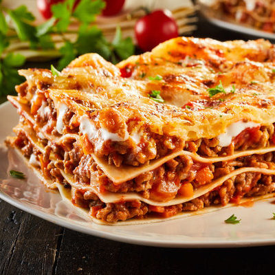

Odin Recipes
Lasagna

Little is more satisfying than cooking a classic to perfection –
Sarah Cook gives us a lesson in how to make lasagne
Prep time 1hr
Difficulty Easy
Serves 8
Cook time 1hr
Nutritional information per serving
Kcal 794
Fat 38g
Carbs 63g
Protein 48g
Ingredients
For the meat sauce:
- 3 tbsp olive oil
- 2 celery sticks, finely chopped
- 1 onion, finely chopped
- 1 carrot (about 100g), finely chopped
- 3 garlic cloves, crushed
- 140g cubetti di pancetta
- 500g beef mince (we used 10% fat)
- 500g pork mince or British veal mince
- 200ml milk
- 2 x 400g cans chopped tomatoes
- 2 bay leaves
- 1 rosemary sprig
- 2 thyme sprigs
- 2 tsp dried oregano
- 2 beef stock cubes
- 500ml red wine
For the lasagna:
- About 400g dried pasta sheets
- 50g parmesan, finely grated
For the white sauce (béchamel)
- 1.5l milk
- 1 onion, thickly sliced
- 3 bay leaves
- 3 cloves
- 100g butter
- 100g plain flour
- Good grating of nutmeg